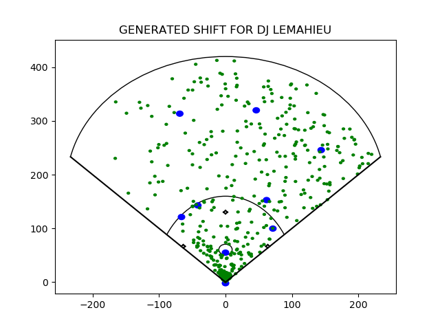
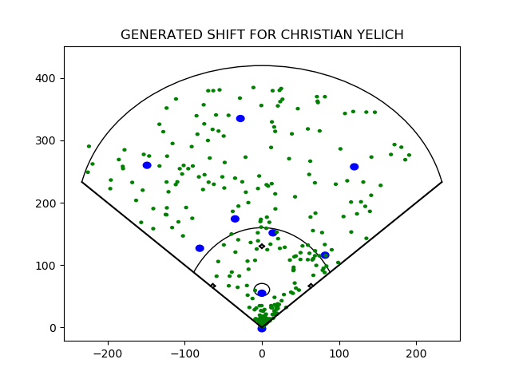
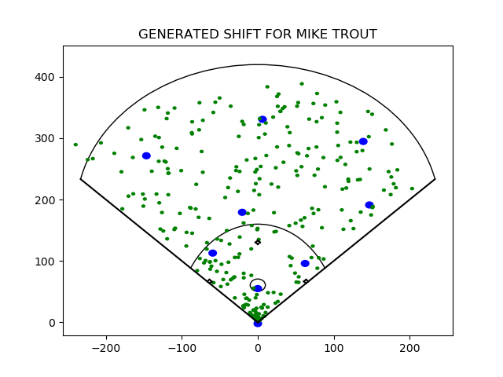
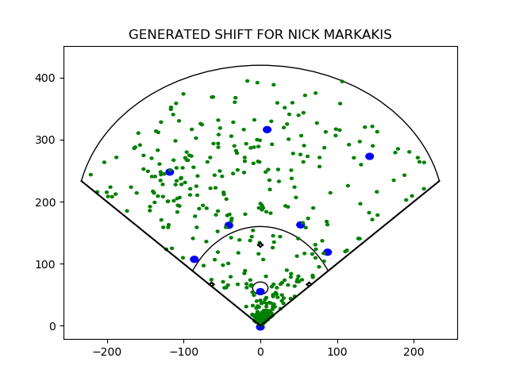

Examples
These alignments were created by taking the batter's data from either 2019 or 2019-2020, depending on how much data was available in 2019. Each batter's data was randomly separated into train and test datasets with a 2:1 split. The shift was generated by the train data and evaluated on the test data before and after training.

Before training: 0.197 | After training: 0.096

Before training: 0.186 | After training: 0.138

Before training: 0.187 | After training: 0.226

Before training: 0.183 | After training: 0.187

Before training: 0.130 | After training: 0.096

Before training: 0.165 | After training: 0.157